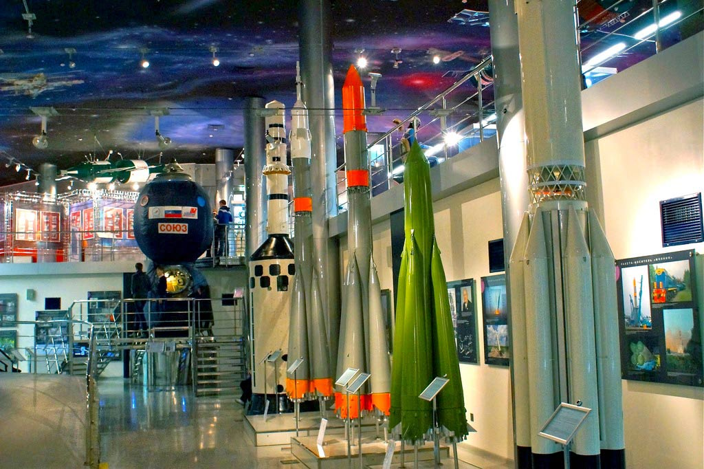
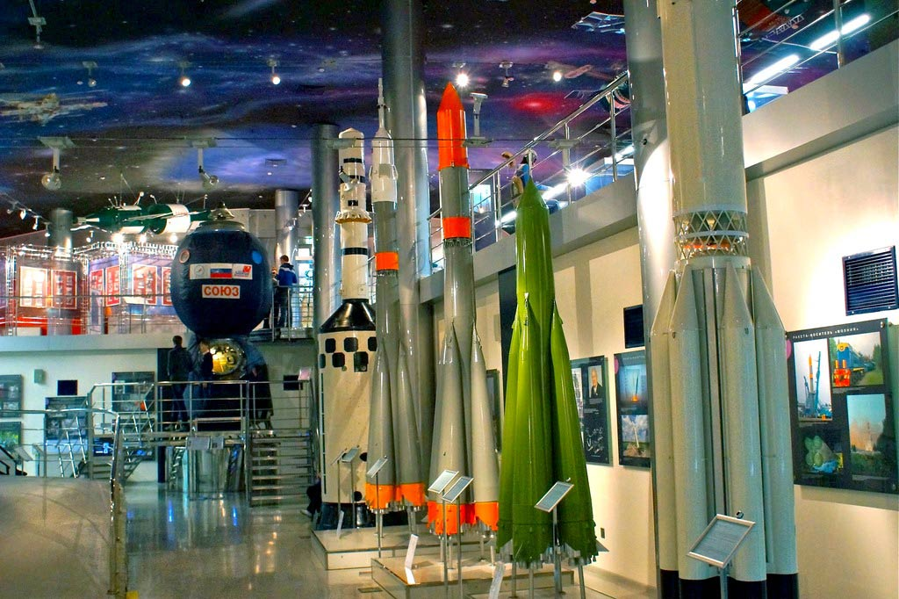

Музей космонавтики в Москве (ранее Мемориальный музей космонавтики) — музей космической тематики в стилобате монумента «Покорителям космоса» на Аллее Космонавтов ВДНХ. Музей был открыт 10 апреля 1981 года — к 20-летию полёта в космос Юрия Гагарина. Предметный фонд музея на январь 2017-го насчитывает более 100 тыс. единиц хранения. Общая площадь музея — 8400 м², из них 3720м² занимает непосредственно экспозиция. Среди экспонатов находятся образцы ракетно-космической техники, личные вещи космонавтов и конструкторов, архивные документы и предметы нумизматики и филателии. Музею принадлежит филиал — Дом-музей академика Сергея Павловича Королёва на 1-й Останкинской улице. Помимо выставочной работы, музей занимается культурно-просветительской деятельностью и проводит масштабную научную работу. По данным на 2016 год, ежегодное число посетителей достигло 510 тысяч человек, а к 2020-му выросла до 750 тысяч.
 
